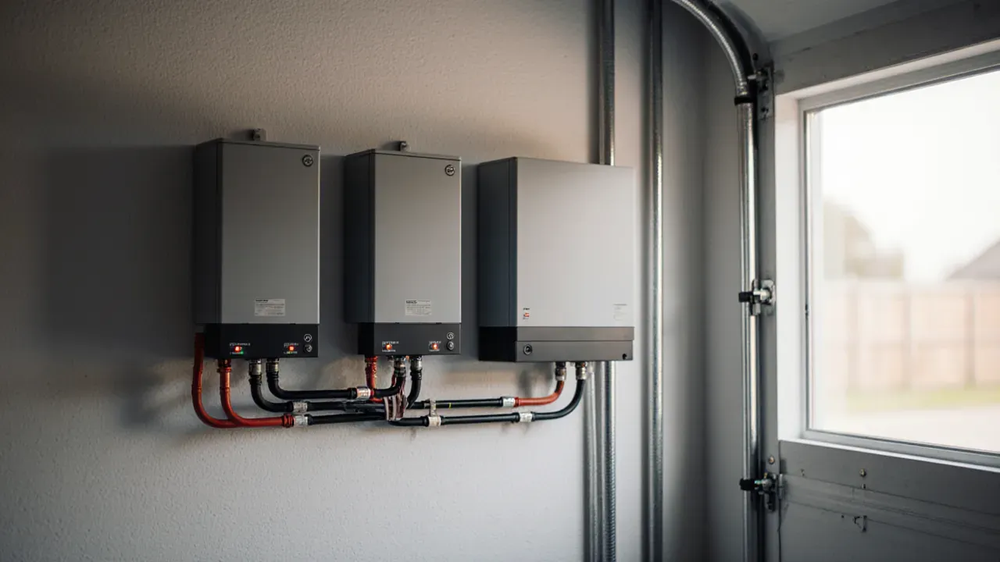

What counts as "embedded generation"?
The municipality calls these systems small-scale embedded generation (SSEG). In simple terms, it is any generator on your property that can run while connected to the municipal supply. That includes:
- Grid-tied solar PV systems
- Hybrid inverters with batteries, including those set to "zero export" or "no feed-in"
- Battery systems that charge from the grid and supply your load during outages
The second point catches many people out. A hybrid inverter that never sends power back to the grid is still connected to it, so it still needs approval. The main exception is a genuinely off-grid system with no connection to the municipal supply at all.
Why registration matters
- Safety of municipal staff. During an outage, a badly configured inverter can push power back into lines that technicians believe are dead. Approved inverters must disconnect automatically when the grid goes down.
- Insurance. An unapproved installation can give an insurer grounds to question a claim after a fire or damage.
- Selling your property. Buyers, banks and conveyancers increasingly ask for proof that solar systems are compliant and approved.
- Exporting power. If you want credit for power you send to the grid, you need approval and a suitable meter first.
- Avoiding penalties. Municipalities can disconnect or penalise systems connected without approval.

The standards behind it
You do not need to know these by heart, but it helps to recognise the names when an installer or the municipality mentions them:
- NRS 097-2-1 sets the requirements for inverters connected to the grid. Your inverter should appear on the municipality's list of approved inverters.
- NRS 097-2-3 limits how much generation can connect to the network, relative to the size of your supply.
- SANS 10142-1 covers the wiring of your electrical installation, and SANS 10142-1-2 covers the DC side of solar PV systems.
The process, step by step
- Size the system around your goals. Lower bills, backup during outages, exporting power, or a mix. This decides the inverter, panels and batteries.
- Design it properly. Choose an approved inverter, check the system size against the limits for your supply, and prepare a single-line diagram showing how everything connects.
- Apply before you install. Submit the application to eThekwini Electricity with the required documents, such as the diagram and the inverter's compliance certificate.
- Install with a registered electrician. The installation must be done or supervised by a registered person, who issues a Certificate of Compliance covering the work.
- Commission and sign off. The system is tested and commissioned. Depending on its size, the municipality may require sign-off by a registered professional engineer or technologist.
- Sort out metering. If you will export power, your meter may need to be replaced and your tariff may change.
Already installed without approval? You are not alone, and it can usually be fixed. The system is inspected, any non-compliant parts are corrected, and the application is submitted after the fact. It is far easier to do this now than in the middle of a property sale or an insurance claim.
Common mistakes we see
- Installing first and applying later, then finding the inverter is not on the approved list
- Assuming a "zero export" setting means no approval is needed
- No Certificate of Compliance for the DC side of the solar installation
- Cables, isolators or protection not rated for the system's actual currents
- Batteries installed in hot, poorly ventilated spaces without proper fire precautions
How Deucon can help
We design solar and hybrid systems around what you actually need, prepare and submit the municipal application, and provide professional sign-off where it is required. For systems already installed, we inspect them, list what needs correcting and help get them approved.
Planning solar, or need an existing system approved?
Send us a few details and we will advise on the best route.
This article is general information, not advice for a specific installation. Municipal requirements, forms and fees change from time to time, so always check the current requirements with eThekwini Electricity or ask us before you install.